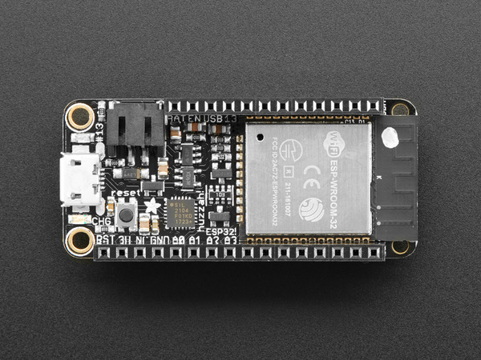

Wednesday 4/3/2023
Waseem
As I was not having much luck running the FreeRTOS demo in the MPLAB IDE, Professor Marshall suggested I try my luck at getting an ESP32 to run FreeRTOS in the ESP-IDF. He pointed me to this board (I got the one with stacking headers installed): https://www.adafruit.com/product/3619
I managed to get both the hello world and blink demos (which both use FreeRTOS) to run without error. The setup/installation process was not very straightforward, but these are the resources that helped me get everything going:
https://docs.espressif.com/projects/esp-idf/en/stable/esp32/get-started/index.html
https://github.com/espressif/idf-eclipse-plugin/blob/master/README.md
https://docs.espressif.com/projects/esp-idf/en/latest/esp32/get-started/windows-setup.html
As my hardware knowledge is pretty limited and the ESP-IDF is very new to me, I have neither managed to see where “hello world” is being printed to the console or figured out the way to connect the led to the stacking headers to get demo programs 1 and 2 to work, respectively. I will try to figure out how to do this (probably with Professor Marshall’s help). For know it’s pretty safe to say the ESP-IDF is a better environment to use going forward.
Wednesday 3/20/2024
Waseem
As for the time being trying to program the Pumpkin Board with FreeRTOS seems to be a dead end, I’m shifting focus towards programming an ESP32 using an ESP-IDF, which has FreeRTOS integrated as a component.
I’ve ordered this Adafruit ESP32 (with headers installed) and downloaded the Espressif IDE and the ESP-IDF powershell. The ESP32 Should arrive in a week or so.
Once I have it I will try to make sure everything is working in the Arduino IDE before switching over to ESP-IDF. If I can get the ESP-IDF Hello World sample project working I will switch gears and do what I hoped to do with the Pumpkin board, which is to get several LEDs blinking and go from there.
Wednesday 3/13/2024
Waseem
I spent a fair amount of time trying to get the Salvo demo application to work, to no avail. I found that a lot of important files were missing from the Salvo lite download, and the MPLAB IDE reflected in the documentation is entirely different from the one available today. For these reasons I decided to try out FreeRTOS. It has been a couple of weeks working with the demo configured for a PIC24 (albeit not the PIC24FJ256GB210 we are working with, but something similar). This demo needs a c30 compiler to run. I have not got it to run yet. I’ve been stuck at this error when trying to build:
make -f nbproject/Makefile-default.mk SUBPROJECTS= .build-conf make[1]: Entering directory 'C:/Users/Wasee/OneDrive/Documents/RTOSDemo_PIC24.X' make -f nbproject/Makefile-default.mk dist/default/debug/RTOSDemo_PIC24.X.debug.elf make[2]: *** No rule to make target '../../Desktop/FreeRTOSv202212.01 \(3\)/FreeRTOSv202212.01/FreeRTOS/Demo/PIC24_MPLAB/main.c', needed by 'build/default/debug/_ext/1140278103/main.o'. Stop. make[2]: Entering directory 'C:/Users/Wasee/OneDrive/Documents/RTOSDemo_PIC24.X' make[1]: *** [.build-conf] Error 2 make[2]: Leaving directory 'C:/Users/Wasee/OneDrive/Documents/RTOSDemo_PIC24.X' make: *** [.build-impl] Error 2 nbproject/Makefile-default.mk:85: recipe for target '.build-conf' failed make[1]: Leaving directory 'C:/Users/Wasee/OneDrive/Documents/RTOSDemo_PIC24.X' nbproject/Makefile-impl.mk:39: recipe for target '.build-impl' failed BUILD FAILED (exit value 2, total time: 176ms)
I checked and the makefiles are there (I haven’t changed a thing yet). It’s discouraging that I’m running into problems running the demo right out of the starting gate, but I think I will post on the MPLAB forum to see what’s going on.
Thursday 1/18/2024
Waseem
I was able to program the LED Professor Marshall and I hooked up to the board yesterday to turn on.
Wednesday 1/17/2024
Prof Marshall
Page 65 of the Microchip MPLAB PICkit 4 In-Circuit Debugger User's Guide shows the pinout of the PICkit4 programmer/debugger device.
Additional background information on programming Microchip microcontrollers is in the In-Circuit Serial Programming (ICSP) Guide.
The used Pumpkin Cubesat boards which APU purchased are: CSK Development Board 705-00194 Rev D (S/N 274, Assy Rev 01) $1710 PSPM E 705-00687 Rev B (S/N 108, Assy Rev 01) $855
See CubeSat Student Research Log Fall 2022.
The Pluggable Socketed Processor Module (PSPM) E board has a 6-pin 1/10” header, reference designator J3, near the modular jack.
Per the PSPM E Data Sheet “Customers can connect … Microchip PICKit to the PSPM's 6-pin 1x6 0.100” pitch inline header J3.“
So it might be as easy as plugging the PICkit4 module into the PSPM E board. If the module standing vertically on the 6-pin header, with its attached microUSB cable is putting too much strain on the equipment, we could whip up a “Dupont” cable as a short 1:1 M-F extension.
For posterity the Microchip AC164110 is another way to connect the PICkit4 and the PSPM E for ICSP programming, but seems unnecessary.
Prof Marshall and Waseem We looked over the jumpers, decided on trying to power the board through USB connector J4 on the processor module, no smoke came out and the VCC light only on the development board lit up green. PICkit4 is plugged into the processor module VIA ICSP, and is powered up through Waseem’s laptop but the board (VCC) loses power. We are powering it up using both Prof Marshall and Waseem’s laptops.
Waseem’s computer has successfully connected to the board. Using MPLAB we got this message after clicking “Read Device Memory Main Project”:
Target device PIC24FJ256GB210 found. Device Revision Id = 0x4 Device Id = 0x41060000
Tutorial on blinking an LED using MPLab X and a PIC microcontroller: Microchip Minutes: blink Application Lab
Using this tutorial, (https://www.theengineertutor.com/tutorial-on-how-to-blink-a-led-using-mplab-x/) but substituting the header file to match what we are working with (it should be p24FJ256GB210.h) we got the code to successfully run in the MPLAB IDE.
Per https://www.pumpkininc.com/space/datasheet/710-00711-B_DS_PSPM_E.pdf GPIO pin RF1 on the PIC24F goes to IO.24 on the Processor module, which goes to H2.24 on the Development Board. J.R. used “dupont” jumper wires to hook the anode of a red LED to H2.24, and the cathode to a 10K resistor, which then goes to H2.30, DGND.
The hope is if Waseem can work out MPLab X’s pin mapping function, he can blink the LED as a hardware-hello-world.
Tuesday 12/20/2022
Professor Marshall
DVI-D and ⅛” audio cables installed at the Mini Mill workstation computer. Still needs two IEC power cables and a mouse pad
Wednesday 12/14/2022
Professor Marshall
For posterity, what APU purchased on eBay auction 165546144816 is:
Items Included:
- Pumpkin CubeSat Kit Development Board PCB
- Software
- Power Supply
- Cables
- Anything Not Listed Above
Items Not Included:


Tuesday 12/13/2022
Professor Marshall
I picked up our used Pumpkin Development board from Cougar Tech, which APU had purchased on eBay auction 165546144816. Upon opening the box and inspecting the boards, they match what was listed. A used Pumpkin development main board with the Pluggable Processor Module for a PIC24.
CSK Development Board - $1710
PSPM E - $855
It did not include the PIC24 processor. I have one soldered to a module, which I could work to desolder.
It was shipped well packed in a silver anti-static bag, pink bubble wrap, and bubble wrap. It does have some shelf wear - a power jack is cracked, a fuse is missing, some jumpers were bent, and one corner has a ding. But for its age it is in fine shape, and appears serviceable.
Priority 1 is getting a PIC24 processor for it. I can try to desolder one we bought attached to a Microchip processor module (Digi-key p/n MA240021-ND). Also APU has ordered two chips, Digi-key p/n PIC24FJ256GB210-I/PT-ND, which would just set into the Zero Insertion Force (ZIF) socket which Pumpkin supplied on the PPM, but they are backordered until circa March, estimated ship date 3/21/2023.
I asked my friend Joe for advice on removing the PIC24FJ256GB210-I/PT from the MA240021, and he said:
Luckily there are no grounding pads on the IC to give you problems, so no heat plate would be necessary. I would just flood the pins with flux; drag solder the ChipQuik onto the pins, and use an exacto knife to apply a slight pressure between the corner of the IC and the PCB. Thus breaking any surface tension and lifting the IC off the board. Then under a microscope I would clean the IC pins off with a desoldering wick. Or you could do the initial ChipQuik application with the soldering Iron, then switch off to the hot air pen to go around the pins while lightly tapping on the IC. Once you get movement on the IC just pluck it off the board and clean. So basically how you were planning to proceed. Easy Peasy :) The ChipQuik stays liquid for a long time.
ChipQuik from DigiKey: 315-REMKIT-ND $11.95
Desolder Wick from DigiKey: 80-4-5-ND $6.26


PG164140-ND PG164140 Microchip Technology PROGRAMMER MCU PICKIT4
AC102015-ND AC102015 Microchip Technology UNIVERSAL ADAPTER BOARD
When we are ready we can power up the boards even without a processor as a “smoke test”. Also a next step is purchasing ChipQuik low-temperature rework solder, so I can get a PIC24 which will fit into our development board.
12/9/2022
Professor Marshall
Pablo just returned from some time away, I inquired about the status of our order, and he said the used Pumpkin Development board is waiting for me in Cougar Tech (the computer store inside the Campus Store, formerly known as Cougar Byte, in what was formerly known as the APU Bookstore.) (I had been checking in ECS, IMT, and the mail room, but hadn't thought to check Cougar Tech for the package.)
I'll pick it up early next week, check it out, and leave it in the CubeSat research closet. There is already a PIC programmer and adapter boards in the research closet.
We had a very small amount of grant money left which needed to be spent, so I had APU purchase two PIC24 processors for the Pumpkin Development Board. Digi-key PIC24FJ256GB210-I/PT-ND.
They are backordered (global supply chain issues / chip shortage). Digi-key estimates they will ship on 3/21/2023.
12/7/2022
Professor Marshall
APU Engineering Capstone students in Spring of 2019 used two different microSD card holders on three different PCBs they produced for a Capstone project.
I have PCBs with unpopulated footprints, and four of Molex p/n 5031821852 which I’ll leave in the CubeSat research room. I’ll to find the p/n used on the other board. I also grabbed a 32G microSD card that can go to the CubeSat project.
Also I grabbed a 5V Switch Mode Power Supply module that I like, the OKI78SR-5/1.5W36H-C, and some barrel power jacks PH-102AH, probably from the DC UPS project, probably also Fall of 2018 and Spring of 2019.
12/6/2022
Professor Marshall
Last week as Nathanael and I were reviewing the Pumpkin motherboard and the CSK 104-pin bus we noticed that Pumpkin both brought SPI for an SD card to the 104-pin bus, and populated a full-size SD card on their motherboard.
We are thinking to incorporate a microSD card socket on our Feather/iceWerx-based development CSK motherboard, and we are thinking to run SPI to the stack in support of any other SPI peripherals we choose to put on other cards in the stack - potentially a camera on the topmost payload board.
Previously Nathanael suggested a couple of connectors, below are my responses:
Molex 5009010801-> I think we'd prefer not hinge type.
-> Looks difficult to hand-solder. Looks like the pads are down inside it
I haven’t taken the time to find the part I used on a board for a consulting gig a few years ago, but looking online now, I think I like this part: GCT MEM2080-00-128-00-A.

Mouser 4.7k in stock, $1.54/ea
Digi-key 2K in stock, $1.55/ea
SnapEDA has the library part available
Looks reasonable to hand-solder, in stock from multiple big distributors, reasonably priced. Push-push makes it easy to use.
Before I remove it from my Mouser cart, documenting for posterity the $25,000 CSK-compatible motherboard that Mouser lists: Mouser P/N 466-RH-OBC-1 from VORAGO Technologies, their P/N RH- OBC-1./p

Also I’m removing from my cart an interesting antenna: Mouser 259- M1575HCT-22P-E5, Maxtena P/N M1575HCT-22P-E5.

And finally a holder for a half-size breadboard and an Arduino Uno: Mouser 474-DEV-11235, Sparkfun P/N DEV-11235.

11/30/2022
Professor Marshall
Nathanael Covarrubias - You have the .brd file from github. Please upload it to oshpark.com and they'll provide you a price to produce three copies. Please e-mail me the price for standard and expedited fabrication. My intention is to check in with Dr. Yeh. If ECS can't cover it I may ask permission to bug Dr. Huang or Joshua Canada to see if CLAS can find some loose change under a couch cushion. We already have the ESP32 and RISC-V Feather and the iceWerx, so the bare board would actually get us pretty far, we don't need much past that to solder and test one unit. (Although I'd like an RBF switch, which is $25 or such, pretty expensive for one fancy button.)
A little more work, but once you know how, just 10 minutes, you could export the .brd design into a zip file of "gerber" files, and upload to Digi-Key's DKRed service and get a quote from them. They are a little more expensive, but maybe higher quality, and you usually get a few free boards from them. I sort of like that the DKRed boards are red, that's what Pumpkin uses sometimes to differentiate a non-flight board, a board intended only for testing/development. See below for the steps.
Please log the cost estimate to the google doc log file, and please log your work today on the PCB to the log book.
Nathanael Covarrubias, Brandon Lau, David Enzo Florendo, Syuzanna Daibyan, Stephan Jackson - please use this research log document, and please log even avenues that don't pan out. Dr. Thomas reminds us that ABET wants to see our work towards solutions, including the things we tried that didn't work or where we decided to go a different route to the final solution.
How to export gerber files from Eagle and upload to DKRed:
In the Eagle Board window, click File > CAM Processor…
Make sure that “template_2_layer.cam” is selected at the top left, and click Process Job at the bottom right.

Verify that your project’s directory is indicated, and click Select Folder at the bottom.


In your project’s directory is a new folder CAMOutputs

What we need for Digikey’s DKRed service are the NC Drill .xln ( Excellon) file in DrillFiles and some of the Gerber files in the GerberFiles directory.
To put the right files into a zip file, in Windows you can simply highlight DrillFiles and GerberFiles, right click, Send To, Compressed (zipped) folder. Vola, you have a zip file with your Gerber files.
Then navigate to https://www.digikey.com/en/pcb-builder/?p=dkred, click on

and upload your zip file.
Digikey’s tool correctly identifies the files and generates a preview, with tabs across the top for different views.

Is it ironic that DKRed’s rendering engine shows the soldermask as green?


In addition to Digi-key’s DKRed prototype service for very small quantity orders, they also provide a marketplace to let you compare bids from other companies to fabricate higher quantities of your boards.
https://www.digikey.com/en/pcb-builder/

Generating the Gerber files also generated a Bill of Materials (BOM) file.
Look in Documents\EAGLE\projects\(your project name)\CAMOutputs\Assembly
Look for a file which is the name of your board, with pcb.txt at the end. It is a fixed-width text file. It’s a little awkward, but it can be opened with Excel.

That file includes some of the information on the parts to order to make your board.